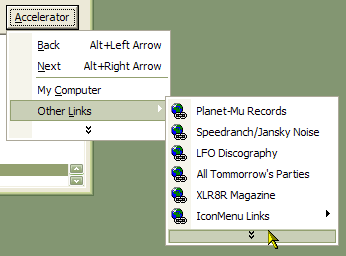
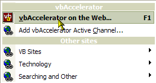
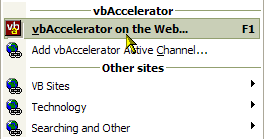

PopMenu DLL Documentation (3K)
PopMenu DLL Documentation (3K)
 VB5 PopupMenu DLL Binary (51K)
VB5 PopupMenu DLL Binary (51K)
 VB5 PopupMenu DLL Demonstration (78K)
VB5 PopupMenu DLL Demonstration (78K)
 VB5 PopupMenu DLL Full Source (184K)
VB5 PopupMenu DLL Full Source (184K)
 VB6 PopupMenu DLL Binary (52K)
VB6 PopupMenu DLL Binary (52K)
 VB6 PopupMenu DLL Demonstration (76K)
VB6 PopupMenu DLL Demonstration (76K)
 VB6 PopupMenu DLL Full Source (185K)
VB6 PopupMenu DLL Full Source (185K)
 Bugs: 12 / 13
Bugs: 12 / 13
 Issues: 0 / 0
Issues: 0 / 0
 Questions: 0 / 0
Questions: 0 / 0
 23 Apr 2003
23 Apr 2003
If an menu was used as a drop-down from a vbAccelerator Toolbar control, and it contained infrequently used items which were hidden, once the items were exposed they did not respond when clicked. Now all items click correctly.
When showing as a chevron in a menu, if you customised which buttons were visible they could incorrectly appear in the chevron menu.
Disabled items now draw in the correct colour when XP style is in effect.
 Subclassing Without The Crashes
Subclassing Without The Crashes

PopupMenu DLL - Create Unlimited Popup Menus
This component provides you with Popup Icon Menus and much more.
The PopupMenu (cNewMenu.dll) ActiveX DLL is allows you to create completely new popup menus with icons for your application. Menus created using this control either can be used as normal Windows Context menus or can be attached to a vbAccelerator CoolMenu and ToolBar control to be used as a form menu within a toolbar. PopupMenu supports all of the latest Menu UI features: showing and hiding infrequently used items, Office XP menu drawing styles, menus which stay open when you click them and much more.
Quick Start - Using the cNewMenu DLL
Here is how to get cNewMenu working in your project quickly:
- Add a reference to the cNewMenu DLL to your project (it appears as "vbAccelerator Popup Menu DLL - Allows an unlimited number of new pop-up menus to be created without reference to a VB menu" in the References list.) If you don't already have an ImageList, add one with the icons you want.
- Initialise an instance of the cPopupMenu class in a form you want the popup menus to appear.
You can either make the instance visible to the entire form, in which case you can respond
to cPopupMenu events such as ItemHighlight and InitPopupMenu, or you can declare
it at the point you need it.
- To declare the instance with event handling:
Private WithEvents m_cPopMenu as cPopMenu Private Sub Form_Load() Set m_cPopMenu = New cPopupMenu ' Initialise the Image List (you can change this later): m_cPopMenu.ImageList = ilsIcons16 ' Initialise the hWndOwner (you must do this before showing a menu): m_cPopMenu.hWndOwner = Me.hWnd End Sub - To declare the instance when you need it:
Private Sub txtEdit_MouseDown( _ Button As Integer, Shift As Integer, X As Single, Y As Single) Dim cPopMenu As New cPopupMenu ' Initialise the Image List: cPopMenu.ImageList = ilsIcons16 ' Initialise the hWndOwner (you must do this before showing a menu): cPopMenu.hWndOwner = Me.hWnd End Sub
- To declare the instance with event handling:
- Now you are in a position to create some menus. This sample shows you how to
add a (vaguely familiar?) menu which looks like this:
CutCopy Paste -------------------- Toggle > Breakpoint ---------------------------- v Break On All Errors Break In Class Module Break On Unhandled Errors ----------------------------- Bookmark --------------------- Object BrowserThe code:
Dim lIndex As Long Dim lIconIndex As Long ' Here I am assuming the Image List is called ilsIcons and ' the PopMenu object is cP: ' Add Cut/Copy/Paste: lIconIndex = ilsIcons.ListImages("CUT").Index - 1 cP.AddItem "Cu&t", , , , lIconIndex, , , "Cut" lIconIndex = ilsIcons.ListImages("COPY").Index - 1 cP.AddItem "&Copy", , , , lIconIndex, , , "Copy" lIconIndex = ilsIcons.ListImages("PASTE").Index - 1 ' The Paste item is disabled here: cP.AddItem "&Paste", , , , lIconIndex, False, , "Paste" cP.AddItem "-" ' Add Toggle and Store the Index so we can add sub items to it: lIndex = cP.AddItem("&Toggle") ' Add the Sub Items: lIconIndex = ilsIcons.ListImages("BREAKPOINT").Index - 1 cP.AddItem "Breakpoint", , ,lIndex , lIconIndex, , , "Breakpoint" cP.AddItem "-", , ,lIndex ' This item is checked: cP.AddItem "Break on All Errors", , ,lIndex , , , True, "BreakAll" cP.AddItem "Break in Class Module", , ,lIndex , , , , "BreakClass" cP.AddItem "Break on Unhandled Errors", , ,lIndex , , , , "BreakUnhandled" cP.AddItem "-", , ,lIndex lIconIndex = ilsIcons.ListImages("BOOKMARK").Index - 1 cP.AddItem "Bookmark", , ,lIndex , , , , "Bookmark" cP.AddItem "-" lIconIndex = ilsIcons.ListImages("OBJECTBROWSER").Index - 1 cP.AddItem "&Object Browser", , , , lIconIndex, False, , "ObjBrowser" Having built a menu, you can now show it. If your PopMenu instance is in scope for the entire form, you can store this menu for later use under a string key of your choice using cP.Store "YourName". To get it back again, just call cP.Restore "YourName".
To show the menu, you need to determine the left and right positions to show it, and you can optionally provide the boundaries of a rectangle in which the menu must not appear. This rectangle is useful if you are showing the menu as the result of clicking a button, when you don't want the button to be obscured by the menu:
' Show the menu and get the index the user chooses (if any): ' For this sample, it is assumed the menu is been shown because ' the button cmdNewMenu has been clicked: lIndex = cP.ShowPopupMenu( _ cmdNewMenu.Left, cmdNewMenu.Top + cmdNewMenu.Height, _ cmdNewMenu.Left, cmdNewMenu.Top, _ cmdNewMenu.Left + cmdNewMenu.Width, cmdNewMenu.Top + cmdNewMenu.Height _ ) If (iIndex > 0) Then ' Display the key of the chosen item: MsgBox "Selected: " & cP.ItemKey(iIndex) End IfNote that the coordinates to exclude should be specified relative to the form that owns the instance of the cPopupMenu class (specified through the hWndOwner property when you initialise the class).
You can do more sophisticated things by responding to the ItemHighlight and MenuExit events to provide status messages. You can also respond to the InitPopupMenuMenu event if you want to dynamically create sub items just as they are about to be shown. Check the cPopMenu control for more details on these methods.
Text Separators
The new text separator feature can be used by either setting the Header property to true for the menu item, or by prefixing the item's caption with a minus when it is added:
cP.AddItem "-Other Sites", , , , lIconIndex
There are two styles for text separators, set using the HeaderStyle property:
- ecnmHeaderCaptionBar
This is the default, and renders like a small caption bar:
 - ecnmHeaderSeparator
In this style the separator renders in the ICQ style:

Although the small caption style headers look a little like the tear off bars you get in Office, there is no way to allow a menu to be torn off like a dialog control. vbAccelerator is working on an Office 97 style tear-off drop-down control, but this will have to be based on a VB Form or Win32 window from first principles rather than a Menu.